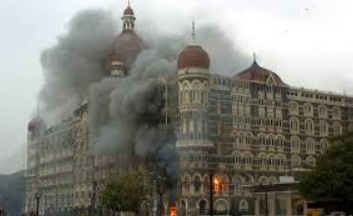

2008 Attack
Taj Mahal Palace Hotel was specifically chosen by
Lashkar-e-Taiba for an attack so that it will be "striking a blow against a
symbol of Indian wealth and progress". The hotel was attacked on 26 November
2008, during which material damage occurred, including the destruction of the
hotel's roof in the hours following. Hostages were taken during the attacks,
and at least 167 people were killed, including many foreigners. The casualties
were mostly Indian citizens, although westerners carrying foreign passports
were singled out. Indian commandos killed the gunmen barricaded in the hotel,
to end the three-day battle on 29 November. At least 31 died at the Taj.
Approximately 450 people were staying in the Taj Mahal Palace and Hotel at
the time of the seizure. The attack was planned using information compiled
by David Headley, a Pakistani-American, who had stayed at the hotel multiple
times.
Soon after (30 November), Tata chairman Ratan Tata said in an interview with
CNN's Fareed Zakaria that they had received advance warning of the attacks
and that some countermeasures had been taken. These may have been relaxed
before the attack, but in any case were easily sidestepped by the operatives.
The less-damaged sections of the Taj Mahal Palace and Tower hotel reopened
on 21 December 2008.
It took several months to rebuild the popular heritage section of the
Taj Mahal Palace Hotel.
Hillary Clinton visited Mumbai in July 2009, aiming to deepen
India – United States relations and stayed at the Taj hotel;
she also attended a commemoration event.
"I wanted to send a message that I personally and our country is in sympathy
and solidarity with the employees and the guests of the Taj who lost their
lives … with the people of Mumbai." On 15 August 2010, India's Independence
Day, the Taj Mahal Palace was reopened after restoration. The cost of the
restoration of the hotel so far has been 1.75 billion rupees. The palace
wing has been restored and offers new hotel services.
On 6 November 2010, U.S. President Barack Obama became the first foreign
head of state to stay at the Taj Mahal Palace after the attacks. In a speech
from the terrace of the hotel, Obama said that "the Taj has been the symbol
of the strength and the resilience of the Indian people."
